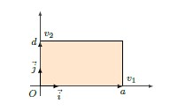

Cours¶
Introduction et Définition¶
Les matrices sont aujourd’hui une des bases de l’informatique moderne, sont très utiles dans les domaines de la mécanique nécessitant des changement de bases, des calculs d’efforts, etc.. Une vidéo de M. Ouin sur le sujet est disponible à l’adresse suivante: https://www.youtube.com/watch?v=CS8oAl9G94E.
Qu’est-ce qu’une matrice ?¶
Définition 1.1.
Une matrice \(A\) est un tableau rectangulaire d’éléments de \(\mathbb{R}\).
Elle est dite de taille \(n \times p\) si le tableau possède \(n\) lignes et \(p\) colonnes.
Les nombres du tableau sont appelés les coefficients de \(A\).
Le coefficient situé à la \(i\)-ème ligne et à la \(j\)-ème colonne est noté \(a_{i,j}\).
Un tel tableau est représenté de la manière suivante :
Exemple 1.1.
est une matrice \(2\times 3\) avec, par exemple, \(a_{1,1}=1\) et \(a_{2,3}=7\).
Remarque 1.1. On note indifféremment \(a_{ij}\) où \(a_{i,j}\).
Encore quelques définitions :
Définition 1.2.
Deux matrices sont égales lorsqu’elles ont la même taille et que les coefficients correspondants sont égaux.
L’ensemble des matrices à \(n\) lignes et \(p\) colonnes à coefficients dans \(\mathbb R\) est noté \(M_{n,p}(\mathbb R)\) et ses éléments sont appelés matrices réelles.
Matrices particulières¶
Voici quelques types de matrices intéressantes :
Si \(n=p\) (même nombre de lignes que de colonnes), la matrice est dite matrice carrée. On note \(M_{n}(\mathbb R)\) au lieu de \(M_{n,n}(\mathbb R)\).
\[\begin{split}\begin{pmatrix} {\color{myred}a_{1,1}} & a_{1,2} & \dots & a_{1,n}\\ a_{2,1} & {\color{myred}a_{2,2}} & \dots & a_{2,n}\\ \vdots& \vdots & {\color{myred}\ddots} & \vdots\\ a_{n,1} & a_{n,2} & \dots & {\color{myred}a_{n,n}} \end{pmatrix}\end{split}\]Les éléments \(a_{1,1}, a_{2,2}, \ldots, a_{n,n}\) forment la diagonale principale de la matrice.
Une matrice qui n’a qu’une seule ligne (\(n=1\)) est appelée matrice ligne ou vecteur ligne. On la note \(A=\begin{pmatrix} a_{1,1}& a_{1,2}& \ldots & a_{1,p}\cr \end{pmatrix}.\)
De même, une matrice qui n’a qu’une seule colonne (\(p=1\)) est appelée matrice colonne ou vecteur colonne. On la note \(A=\begin{pmatrix} a_{1,1}\cr a_{2,1}\cr \enspace \vdots \hfill \cr a_{n,1}\cr \end{pmatrix}.\)
La matrice (de taille \(n\times p\)) dont tous les coefficients sont des zéros est appelée la matrice nulle et est notée \(0_{n,p}\) ou plus simplement \(0\). Dans le calcul matriciel, la matrice nulle joue le rôle du nombre \(0\) pour les réels.
Exemple 1.2. Les matrices de rotation sont utilisées dans de très
nombreux domaines: sciences industrielles, mécaniques du solide, …
En 2D, une matrice de rotation d’un angle \(\theta\) s’écrit:
\(R_\theta = \begin{pmatrix} \cos(\theta) && \sin(\theta) \\ -\sin(\theta) && \cos(\theta) \end{pmatrix}\).
Un vecteur du plan multipliée par cette matrice est alors rotatée d’un
angle (orienté) \(\theta\). En 3D, il est nécessaire de choisir un axe qui
restera immobile; la rotation se fera autour de cet axe.
Addition de matrices¶
Définition 1.3 (Somme de deux matrices). Soient \(A\) et \(B\) deux matrices ayant la même taille \(n\times p\). Leur somme \(C=A+B\) est la matrice de taille \(n\times p\) définie par \(c_{ij}=a_{ij}+b_{ij}.\)
En d’autres termes, on somme coefficients par coefficients.
Exemple 1.3.
Définition 1.4 (Produit d’une matrice par un scalaire). Le produit d’une matrice \(A=\big(a_{ij}\big)\) de \(M_{n,p}(\mathbb R)\) par un scalaire \(\alpha \in \mathbb R\) est la matrice \(\big(\alpha a_{ij}\big)\) formée en multipliant chaque coefficient de \(A\) par \(\alpha\). Elle est notée \(\alpha \cdot A\) (ou simplement \(\alpha A\)).
Exemple 1.4.
Définition 1.5 (Différence de deux matrices). La matrice \((-1)A\) est l’opposée de \(A\) et est notée \(-A\). La différence \(A-B\) est définie par \(A + (-B)\).
Exemple 1.5.
Alors \(A-B = \begin{pmatrix} 3 & -5 & -2\\ -3 & 0 & -1 \end{pmatrix}.\)
L’addition de matrices (de même taille !) et la multiplication par un scalaire ne présentent pas de difficultés particulières :
Proposition 1.1. Soient \(A\), \(B\) et \(C\) trois matrices appartenant à \(M_{n,p}(\mathbb R)\). Soient \(\alpha \in \mathbb R\) et \(\beta \in \mathbb R\) deux scalaires.
\(A + B = B + A\) : la somme est commutative,
\(A + (B+C) = (A + B) + C\) : la somme est associative,
\(A + 0 = A\) : la matrice nulle est l’élément neutre de l’addition,
Multiplication par un scalaire \((\alpha + \beta )A =\alpha A + \beta A\)
et \(\alpha (A+B)=\alpha A + \alpha B\).
Multiplication de matrices¶
Définition du produit¶
Le produit \(AB\) de deux matrices \(A\) et \(B\) est défini si et seulement si le nombre de colonnes de \(A\) est égal au nombre de lignes de \(B\).
Définition 1.6 (Produit de deux matrices). Soient \(A=(a_{ij})\) une matrice de taille \(n\times p\) et \(B=(b_{ij})\) une matrice de taille \(p\times q\). Alors le produit \(C=AB\) est une matrice \(n\times q\) dont les coefficients \(c_{ij}\) sont définis par :
On peut écrire le coefficient de façon plus développée, à savoir :
Il est commode de disposer les calculs de la façon suivante.
Le coefficient \(c_{ij}\) sur la \(i\)-ème ligne et la \(j\)-ème colonne de C s’obtient en additionnant les produits deux à deux des coefficients de la \(i\)-ème ligne de \(A\) avec ceux de la \(j\)-ème colonne de \(B\).
Exemples¶
Exemple 1.6.
On dispose d’abord le produit correctement : la matrice obtenue est de taille \(2\times2\). Puis on calcule chacun des coefficients, en commençant par le premier coefficient \(c_{11} = 1\times 1\ +\ 2\times(-1)\ +\ 3\times1=2\), puis les autres.
Exemple 1.7 (Produit scalaire). Un exemple intéressant est le produit d’un vecteur ligne par un vecteur colonne :
Alors \(u \times v\) est une matrice de taille \(1\times 1\) dont l’unique coefficient est \(a_1 b_1 + a_2 b_2 + \cdots + a_n b_n\). Ce nombre s’appelle le produit scalaire des vecteurs \(u\) et \(v\).
Calculer le coefficient \(c_{ij}\) dans le produit \(A\times B\) revient donc à calculer le produit scalaire des vecteurs formés par la \(i\)-ème ligne de \(A\) et la \(j\)-ème colonne de \(B\).
Pièges à éviter¶
Premier piège. Le produit de matrices n’est généralement pas commutatif.
En effet, il se peut que \(AB\) soit défini mais pas \(BA\), ou que \(AB\) et \(BA\) soient tous deux définis mais pas de la même taille. Mais même dans le cas où \(AB\) et \(BA\) sont définis et de la même taille, on a en général \(AB\neq BA\).
Exemple 1.8.
Deuxième piège. \(AB=0\) n’implique pas \(A=0\) ou \(B=0\).
Il peut arriver que le produit de deux matrices non nulles soit nul. En d’autres termes, on peut avoir \(A \neq 0\) et \(B \neq 0\) mais \(AB = 0\).
Exemple 1.9. $\(A = \begin{pmatrix} 0 & -1\\ 0 & 5\end{pmatrix}\qquad B = \begin{pmatrix} 2 & -3\\ 0 & 0 \end{pmatrix} \qquad \text{et} \qquad AB = \begin{pmatrix} 0 & 0\\ 0 & 0\end{pmatrix}.\)$
Troisième piège. \(AB=AC\) n’implique pas \(B=C\). On peut avoir \(AB = AC\) et \(B \neq C\).
Exemple 1.10.
et \(AB = AC = \begin{pmatrix} -5 & -4\\ 15 & 12\end{pmatrix}.\)
Propriétés du produit de matrices¶
Malgré les difficultés soulevées au-dessus, le produit vérifie les propriétés suivantes :
Proposition 1.2.
\(A (BC) = (AB) C\) : associativité du produit,
\(A(B+C) = AB + AC\) et \((B+C) A = BA + CA\) : distributivité du produit par rapport à la somme,
\(A\cdot 0 = 0\) et \(0\cdot A= 0\).
Démonstration, pour les curieux.. Posons \(A=(a_{ij}) \in M_{n,p}(\mathbb R)\), \(B=(b_{ij})\in M_{p,q}(\mathbb R)\) et \(C=(c_{ij})\in M_{q,r}(\mathbb R)\). Prouvons que \(A(BC) = (AB) C\) en montrant que les matrices \(A(BC)\) et \((AB) C\) ont les mêmes coefficients.
Le terme d’indice \((i,k)\) de la matrice \(AB\) est \(x_{ik}={\displaystyle \sum_{\ell=1}^{p}}a_{i \ell}b_{\ell k}\). Le terme d’indice \((i,j)\) de la matrice \((AB)C\) est donc
Le terme d’indice \((\ell,j)\) de la matrice \(BC\) est \(y_{\ell j}={\displaystyle \sum_{k=1}^{q}}b_{\ell k}c_{kj}\). Le terme d’indice \((i,j)\) de la matrice \(A(BC)\) est donc
Comme dans \(\mathbb R\) la multiplication est distributive et associative, les coefficients de \((AB)C\) et \(A(BC)\) coïncident. Les autres démonstrations se font comme celle de l’associativité. ◻
La matrice identité¶
La matrice carrée suivante s’appelle la matrice identité :
Ses éléments diagonaux sont égaux à \(1\) et tous ses autres éléments sont égaux à \(0\). Elle se note \(I_n\) ou simplement \(I\). Dans le calcul matriciel, la matrice identité joue un rôle analogue à celui du nombre \(1\) pour les réels. C’est l’élément neutre pour la multiplication. En d’autres termes :
Proposition 1.3. Si \(A\) est une matrice \(n \times p\), alors
Démonstration, pour les curieux.. Nous allons détailler la preuve. Soit \(A \in M_{n,p}(\mathbb R)\) de terme général \(a_{ij}\). La matrice unité d’ordre \(p\) est telle que tous les éléments de la diagonale principale sont égaux à \(1\), les autres étant tous nuls.
On peut formaliser cela en introduisant le symbole de Kronecker. Si \(i\) et \(j\) sont deux entiers, on appelle symbole de Kronecker, et on note \(\delta_{i,j}\), le réel qui vaut \(0\) si \(i\) est différent de \(j\), et \(1\) si \(i\) est égal à \(j\). Donc \(\delta_{i,j}=\begin{cases} 0 & \text{ si } \;\; i\neq j \\ 1 & \text{ si } \;\; i=j. \end{cases}\)
Alors le terme général de la matrice identité \(I_{p}\) est \(\delta_{i,j}\) avec \(i\) et \(j\) entiers, compris entre \(1\) et \(p\).
La matrice produit \(AI_{p}\) est une matrice appartenant à \(M_{n,p}(\mathbb R)\) dont le terme général \(c_{ij}\) est donné par la formule \(c_{ij}={\displaystyle \sum_{k=1}^{p}a_{ik}\delta_{kj}}\). Dans cette somme, \(i\) et \(j\) sont fixés et \(k\) prend toutes les valeurs comprises entre \(1\) et \(p\). Si \(k\neq j\) alors \(\delta_{kj}=0\), et si \(k=j\) alors \(\delta_{kj}=1\). Donc dans la somme qui définit \(c_{ij}\), tous les termes correspondant à des valeurs de \(k\) différentes de \(j\) sont nuls et il reste donc \(c_{ij}=a_{ij}\delta_{jj}=a_{ij}1=a_{ij}\). Donc les matrices \(AI_{p}\) et \(A\) ont le même terme général et sont donc égales. L’égalité \(I_{n}A=A\) se démontre de la même façon. ◻
Puissance d’une matrice¶
Dans l’ensemble \(M_{n}(\mathbb R)\) des matrices carrées de taille \(n \times n\) à coefficients dans \(\mathbb R\), la multiplication des matrices est une opération interne : si \(A,B \in M_n(\mathbb R)\) alors \(AB \in M_n(\mathbb R)\).
En particulier, on peut multiplier une matrice carrée par elle-même : on note \(A^2 = A \times A\), \(A^3 = A \times A \times A\).
On peut ainsi définir les puissances successives d’une matrice :
Définition 1.7. Pour tout \(A\in M_n(\mathbb R)\), on définit les puissances successives de \(A\) par \(A^0=I_n\) et \(A^{p+1}=A^p \times A\) pour tout \(p\in\mathbb N\). Autrement dit, \(A^p = \underbrace{A \times A \times \cdots \times A}_{p \text{ facteurs}}\).
Exemple 1.11. On cherche à calculer \(A^{p}\) avec \(A=\begin{pmatrix} 1 & 0 & 1 \cr 0 & -1 & 0\cr 0 & 0 & 2 \cr \end{pmatrix}\). On calcule \(A^{2}\), \(A^3\) et \(A^{4}\) et on obtient :
L’observation de ces premières puissances permet de penser que la formule est : \(A^{p}= \begin{pmatrix} 1 & 0 & 2^p-1 \cr 0 & (-1)^{p}& 0\cr 0 & 0 & 2^p \cr \end{pmatrix}\). Démontrons ce résultat par récurrence.
Il est vrai pour \(p=0\) (on trouve l’identité). On le suppose vrai pour un entier \(p\) et on va le démontrer pour \(p+1\). On a, d’après la définition, \(A ^{p+1}=A ^{p} \times A = \begin{pmatrix} 1 & 0 & 2^p-1 \cr 0 & (-1)^{p}& 0\cr 0 & 0 & 2^p \cr \end{pmatrix} \times \begin{pmatrix} 1 & 0 & 1 \cr 0 & -1& 0\cr 0 & 0 & 2 \cr \end{pmatrix} =\begin{pmatrix} 1 & 0 & 2^{p+1}-1 \cr 0 & (-1)^{p+1}& 0\cr 0 & 0 & 2^{p+1} \cr \end{pmatrix} .\)
Donc la propriété est démontrée.
Déterminant d’une matrice¶
Un outil: la transposition¶
Définition 1.8. Transposition
On appelle matrice transposée de la matrice \(A\), et on note \(A^T\), la matrice dont les coefficients de la \(j\)-ème colonne sont les coefficients de la \(j\)-ème ligne de \(A^T\).
Si on note \(a_{ij}\) le coefficient sur le \(i\)-ème ligne et la \(j\)-ème colonne de \(A\), alors \(a_{ij}\) se trouve sur le \(j\)-ème ligne et la \(i\)-ème colonne de la matrice \(A^T\).
On a donc, si \(A = \big(a_{i,j}\big)_{\substack{1\leqslant i \leqslant n \\ 1\leqslant j \leqslant p}}\), alors \(A^T = \big(a_{j,i}\big)_{\substack{1\leqslant j \leqslant p \\ 1\leqslant i \leqslant n}}\).
Exemple 1.12.
\(A = \begin{pmatrix} 2 & 5 & -1\\ 0 & 4 & 3\end{pmatrix}\) alors \(A^T = \begin{pmatrix} 2 & 0\\ 5 & 4\\ -1 & 3\end{pmatrix}\)
Remarque 1.2. La matrice transposée est en quelque sorte une matrice “miroir”:
Définition du déterminant¶
Définition 1.9. Définition formelle (elle n’est pas à connaître) Nous allons caractériser le déterminant comme une application, qui à une matrice carrée associe un scalaire: \(\det : M_n(\mathbb R) \longrightarrow \mathbb R,\) telle que \(\forall A \in M_n(\mathbb R),\quad \det(A) = \sum_{\sigma \in \Sigma_n} \varepsilon(\sigma)\prod_{i=1}^n a_{\sigma(i),i},\) où \(\Sigma_n\) est l’ensemble des permutations de \(\{1,\ldots,n\}\) et \(\varepsilon(\sigma)\) la signature de la permutation \(\sigma\).
Remarque 1.3. Qu’est-ce qu’une permutation ? (pour les curieux)
Une permutation \(\sigma\) d’un ensemble de n éléments, par exemple
\(\{1,\ldots,n\}\), est un réarrangement des positions des éléments de cet
ensemble. On les “réordonne”.
Par exemple, voici une permutation possible \(\sigma\) sur
\(\{1,\ldots,n\}\):
\(\sigma(1) = 1\)(pas de changement)
\(\sigma(2) = 4\)(2 est remplacé par 4)
\(\sigma(3) = 2\)(3 est remplacé par 2)
\(\sigma(4) = 3\)(4 est remplacé par 3)
On note la permutation à l’aide d’un tableau, où la première ligne sont les éléments dans l’ordre naturel, et la seconde sont les éléments permutés correspondants: \(\sigma : \begin{pmatrix} 1 & 2 & 3 & 4\\ 1 & 4 & 2 & 3\end{pmatrix}\)
Remarque 1.4. Signature d’une permutation (pour les curieux)
Soit \(\sigma\) une permutation de \(\{1,\ldots,n\}\).
Soient \(i < j\) deux entiers compris entre \(1\) et \(n\). On dit que la paire \(\{i,j\}\) est en inversion pour \(\sigma\) si \(\sigma(i)>\sigma(j)\)
Une permutation est dite paire si elle présente un nombre pair d’inversions, impaire sinon.
La signature d’une permutation paire est 1 (on note \(\varepsilon(\sigma) = 1\)); celle d’une permutation impaire est -1 (on note \(\varepsilon(\sigma) = -1\)).
Exemple 1.13. Soit une matrice \(A = \begin{pmatrix} 1 & 4 & -1\\ -2 & 5 & -3\\ 6 & 7 & 8\end{pmatrix}\)
Calculons son déterminant.
Il existe 6 permutations de \(\{1,2,3\}\) dans \(\{1,2,3\}\):
Par exemple pour la permutation \(\sigma_3=\begin{pmatrix} 1 & 2 & 3\\ 2 & 1 & 3\end{pmatrix}\), on a \(\varepsilon(\sigma_3) = - 1\) car il y a une seule inversion. En effet \(1<2\) mais \(\sigma_3(1)>\sigma_3(2)\) car \(\sigma_3(1)=2\) et \(\sigma_3(2)=1\). Les autres paires ne sont pas inversées:
\(2<3\)et\(\sigma_3(2)<\sigma_3(3)\)
\(1<3\)et\(\sigma_3(1)<\sigma_3(3)\)
Et
\(\prod_{i=1}^n a_{\sigma_3(i),i}=a_{\sigma_3(1),1}.a_{\sigma_3(2),2}.a_{\sigma_3(3),3}=a_{2,1}.a_{1,2}.a_{3,3}=(-2).4.8\)
On trouve de la même façon:
Pour \(\sigma_1\) : \(\varepsilon(\sigma_1) = + 1\), et \(\prod_{i=1}^n a_{\sigma_1(i),i}=1.5.8\)
Pour \(\sigma_2\) : \(\varepsilon(\sigma_2) = - 1\), et \(\prod_{i=1}^n a_{\sigma_2(i),i}=1.7.(-3)\)
Pour \(\sigma_3\) : \(\varepsilon(\sigma_3) = - 1\), et \(\prod_{i=1}^n a_{\sigma_3(i),i}=(-2).4.8\)
Pour \(\sigma_4\) : \(\varepsilon(\sigma_4) = + 1\), et \(\prod_{i=1}^n a_{\sigma_4(i),i}=(-2).7.(-1)\)
Pour \(\sigma_5\) : \(\varepsilon(\sigma_5) = + 1\), et \(\prod_{i=1}^n a_{\sigma_5(i),i}=6.4.(-3)\)
Pour \(\sigma_6\) : \(\varepsilon(\sigma_6) = - 1\), et \(\prod_{i=1}^n a_{\sigma_6(i),i}=6.5.(-1)\)
D’après la formule \(\det(A) = \sum_{\sigma \in \Sigma_n} \varepsilon(\sigma)\prod_{i=1}^n a_{\sigma(i),i}\),
\(\det(A) = {\color{red}+}1.5.8{\color{red}-}1.7.(-3){\color{red}-}(-2).4.8{\color{red}+}(-2).7.(-1){\color{red}+}6.4.(-3){\color{red}-}6.5.(-1)\)
On trouve finalement \(\det(A)=97\).
Remarque 1.5. On note le déterminant d’une matrice \(A = (a_{ij})\) par :
Théorème 1.1 (Existence et d’unicité du déterminant). Il existe une unique application de \(M_n(\mathbb R)\) dans \(\mathbb R\), appelée déterminant, telle que
le déterminant est linéaire par rapport à chaque vecteur colonne, les autres étant fixés ;
si une matrice \(A\) a deux colonnes identiques, alors son déterminant est nul ;
le déterminant de la matrice identité \(I_n\) vaut \(1\).
Propriétés du déterminant¶
Proposition 1.4. Soit \(A \in M_n(\mathbb R)\) une matrice ayant les colonnes \(C_1, C_2, \ldots, C_n\). On note \(A'\) la matrice obtenue par une des opérations élémentaires sur les colonnes, qui sont :
\(C_i \leftarrow \lambda C_i\) avec \(\lambda \neq 0\): \(A'\) est obtenue en multipliant une colonne de \(A\) par un scalaire non nul. Alors \(\det A' = \lambda \det A\).
\(C_i \leftarrow C_i+\lambda C_j\) avec \(\lambda \in \mathbb R\) (et \(j\neq i\)): \(A'\) est obtenue en ajoutant à une colonne de \(A\) un multiple d’une autre colonne de \(A\). Alors \(\det A' = \det A\).
\(C_i \leftrightarrow C_j\): \(A'\) est obtenue en échangeant deux colonnes distinctes de \(A\). Alors \(\det A' = - \det A\).
Corollaire 1.1. Si une colonne \(C_i\) de la matrice \(A\) est combinaison linéaire des autres colonnes, alors \(\det A=0\).
Théorème 1.2. On a \(\det (AB)=\det A \cdot \det B,\) et \(\det \big(A^T\big)=\det A.\)
Déterminant en dimension \(2\) et \(3\)¶
Matrice \(2 \times 2\)¶
En dimension \(2\), le déterminant est très simple à calculer: \(\det \begin{pmatrix}a&b\\c&d\end{pmatrix} = ad-bc.\) C’est donc le produit des éléments sur la diagonale principale.
Matrice \(n \times n\)¶
Définition 1.10. Mineur du coefficient - Cofacteur
Soit \(A\) dans \(\mathcal{M}_n(\mathbb R)\). On appelle mineur du coefficient \(a_{ij}\), noté \(D_{ij}\) le determinant d’ordre \(n-1\) obtenu en suprimant à la matrice \(A\) sa \(i\)-ème ligne et sa \(j\)-ème colonne.
On appelle cofacteur du coefficient \(a_{ij}\) et on note \(A_{ij}\) le nombre réel \(A_{ij} = (-1)^{i+j}\times D_{ij}\)
Proposition 1.5. On peut calculer un déterminant en développant suivant une ligne ou une colonne. Par exemple si on calcule un déterminant d’ordre \(n\) en développant suivant la \(j\)-ème colonne, on additionne les produits entre les coefficients de la \(j\)-ème colonne et leurs cofacteurs respectifs. Ce qui donne la formule suivante:
Exemple : Calcul d’un det \(3\times 3\) en développant suivant la \(1\)-ère colonne \(det(A) = a_{11}A_{11} + a_{21}A_{21}+a_{31}A_{31}.\)
On peut aussi développer suivant une ligne : on dit qu’on calcule un déterminant d’ordre \(n\) en développant suivant la \(i\)-ème ligne lorsque l’on utilise la formule suivante: \(det(A) = \sum_{k=1}^n a_{ik}A_{ik}\)
Matrice \(3 \times 3\)¶
Proposition 1.6. Soit \(A \in M_3(\mathbb R)\) une matrice \(3 \times 3\): \(A = \begin{pmatrix} a_{11} & a_{12} & a_{13} \\ a_{21} & a_{22} & a_{23} \\ a_{31} & a_{32} & a_{33} \\ \end{pmatrix}.\)
La formule suivante permet de calculer le déterminant de la matrice:
Il existe un moyen facile de retenir cette formule, c’est la règle de Sarrus : on recopie les deux premières colonnes à droite de la matrice (colonnes grisées), puis on additionne les produits de trois termes en les regroupant selon la direction de la diagonale descendante (à gauche), et on soustrait ensuite les produits de trois termes regroupés selon la direction de la diagonale montante (à droite).
Exemple 1.14. Calculons le déterminant de la matrice \(A = \begin{pmatrix} 2 & 1 & 0\\ 1 & -1 & 3\\ 3 & 2 & 1 \end{pmatrix}\).
Par la règle de Sarrus:
Attention : cette méthode ne s’applique pas pour les matrices de taille supérieure à \(3\). Nous verrons d’autres méthodes qui s’appliquent aux matrices carrées de toute taille et donc aussi aux matrices \(3\times3\).
Interprétation géométrique du déterminant¶
Nous allons voir qu’en dimension \(2\), les déterminants correspondent à des aires et en dimension \(3\) à des volumes.
Donnons-nous deux vecteurs \(v_1= \left(\begin{smallmatrix}a\\c\end{smallmatrix}\right)\) et \(v_2= \left(\begin{smallmatrix}b\\d\end{smallmatrix}\right)\) du plan \(\mathbb{R}^2\). Ces deux vecteurs \(v_1,v_2\) déterminent un parallélogramme.
Proposition 1.7. L’aire du parallélogramme est donnée par la valeur absolue du déterminant: \(\mathcal{A} = \Big|\det(v_1,v_2)\Big| = \Big|\det \begin{pmatrix} a & b \\ c & d \end{pmatrix}\Big| .\)
De manière similaire, trois vecteurs de l’espace \(\mathbb{R}^3\):
définissent un parallélépipède.
À partir de ces trois vecteurs on définit, en juxtaposant les colonnes, une matrice et un déterminant: \(\det(v_1,v_2,v_3)=\det \begin{pmatrix} a_{11}&a_{12}&a_{13}\\ a_{21}&a_{22}&a_{23}\\ a_{31}&a_{32}&a_{33} \end{pmatrix}.\)
Proposition 1.8. Le volume du parallélépipède est donné par la valeur absolue du déterminant:
On prendra comme unité d’aire dans \(\mathbb{R}^2\) l’aire du carré unité dont les côtés sont les vecteurs de la base canonique \(\left(\left(\begin{smallmatrix} 1 \\ 0 \end{smallmatrix} \right), \left(\begin{smallmatrix} 0 \\ 1 \end{smallmatrix} \right)\right)\), et comme unité de volume dans \(\mathbb{R}^3\), le volume du cube unité.
Démonstration, pour les curieux.. Traitons le cas de la dimension \(2\). Le résultat est vrai si \(v_1=\left(\begin{smallmatrix}a\\0\end{smallmatrix}\right)\) et \(v_2=\left(\begin{smallmatrix}0\\d\end{smallmatrix}\right)\). En effet, dans ce cas on a affaire à un rectangle de côtés \(|a|\) et \(|d|\), donc d’aire \(|ad|\), alors que le déterminant de la matrice \(\begin{pmatrix} a&0\\0&d \end{pmatrix}\) vaut \(ad\).

Si les vecteurs \(v_1\) et \(v_2\) sont colinéaires alors le parallélogramme est aplati, donc d’aire nulle ; on calcule facilement que lorsque deux vecteurs sont colinéaires, leur déterminant est nul.
Dans la suite on suppose que les vecteurs ne sont pas colinéaires. Notons \(v_1= \left(\begin{smallmatrix}a\\c\end{smallmatrix}\right)\) et \(v_2= \left(\begin{smallmatrix}b\\d\end{smallmatrix}\right)\). Si \(a\neq0\), alors \(v'_2=v_2-\frac{b}{a}v_1\) est un vecteur vertical: \(v_2'=\left(\begin{smallmatrix}0\\d-\frac{b}{a}c\end{smallmatrix}\right)\).
L’opération de remplacer \(v_2\) par \(v_2'\) ne change pas l’aire du parallélogramme.
Cette opération ne change pas non plus le déterminant car on a toujours:
On pose alors \(v'_1= \left(\begin{smallmatrix}a\\0\end{smallmatrix}\right)\): c’est un vecteur horizontal. Encore une fois l’opération de remplacer \(v_1\) par \(v_1'\) ne change ni l’aire des parallélogrammes ni le déterminant car
On s’est donc ramené au premier cas d’un rectangle aux côtés parallèles aux axes, pour lequel le résultat est déjà acquis. ◻
Inverse d’une matrice¶
Définition 1.11. Une matrice \(A\) de \(\mathcal{M}_{n}(\mathbb R)\) est inversible si et seulement si il existe une matrice \(B\) dans \(\mathcal{M}_{n}(\mathbb R)\) telle que \(AB=BA=I_n.\) On note \(A^{-1}\) cette matrice.
Rappelons la définition des cofacteurs, qui va nous être utile.
Rappel 1.1.
Soit \(A\) dans \(\mathcal{M}_n(\mathbb R)\). On appelle mineur du coefficient \(a_{ij}\), noté \(D_{ij}\) le déterminant d’ordre \(n-1\) obtenu en suprimant la \(i\)-ème ligne et la \(j\)-ième colonne du déterminant de \(A\).
On appelle cofacteur du coefficient \(a_{ij}\) et on note \(A_{ij}\) le nombre réel \(A_{ij} = (-1)^{i+j}\times D_{ij}\)
La matrice \((A_{ij})\) s’appelle la comatrice de \(A\), on la note \({\rm Com}(A)\)
On peut alors introduire une méthode systématique pour l’inversion d’une matrice :
Proposition 1.9. Soit \(A\) une matrice de \(\mathcal{M}_n(\mathbb R)\) inversible, alors \(A^{-1} = \frac{1}{det(A)}\times {\rm Com}(A)^T.\)
Résolution de systèmes et inversion de matrices¶
Lien entre inversion de matrices et résolution de systèmes¶
Soit un système de trois équations à trois inconnues:
\((S) : \left\{ \begin{array}{l} x + y +2z = 9 \\ 4x + y + z =9\\ x-2y+3z=6 \end{array} \right.\)
Alors on peut définir:
La matrice 3 x 3 dont les coefficients sont les facteurs de \(x, y\) et \(z\) sur chaque ligne : \(A=\begin{pmatrix} 1&1&2\\ 4&1&1\\ 1&-2&3 \end{pmatrix}\)
La matrice colonne dont les coefficients sont les valeurs du deuxième terme : \(B=\begin{pmatrix} 9\\ 9\\ 6 \end{pmatrix}\)
Et la matrice colonne dont les coefficients sont les inconnues \(x, y\) et \(z\) recherchées : \(X=\begin{pmatrix} x\\ y\\ z \end{pmatrix}\)
Alors on remarque que le système peut se réécrire comme : \(AX=B\)
Si la matrice A est inversible alors on peut écrire: \(A^{-1}AX=A^{-1}B\).Soit \(X=A^{-1}B\)
Proposition 1.10. On considère un système d’équations linéaires de
\(n\) équations à \(n\) inconnues écrit sous sa forme générale suivante:
\(\left\{ \begin{array}{l} a_{11}x_{1} + a_{12}x_{2} + ... + a_{1j}x_{j} + ... + a_{1n}x_{n} = b_{1} \\ a_{21}x_{1} + a_{22}x_{2} + ... + a_{2j}x_{j} + ... + a_{2n}x_{n} = b_{2} \\ ...\\ a_{i1}x_{1} + a_{i2}x_{2} + ... + a_{ij}x_{j} + ... + a_{in}x_{n} = b_{i} \\ ...\\ a_{n1}x_{1} + a_{n2}x_{2} + ... + a_{nj}x_{j} + ... + a_{nn}x_{n} = b_{n} \\ \end{array} \right.\)
Alors le système peut s’écrire comme l’égalité entre :
le produit d’une matrice \(A\) carrée d’ordre \(n\) de coefficient général \(a_{ij}\) avec une matrice colonne \(X\) contenant les inconnues \(x_{1},x_{2},x_{3},...x_{n}\);
et une matrice colonne \(B\) contenant les termes constants \(b_{1},b_{2},b_{3},...b_{n}\).
On a donc l’écriture matricielle suivante: \(A.X = B\)
Si la matrice \(A\) est inversible, on peut alors multiplier chaque terme de l’égalité précédente par \(A^{-1}\): \(A^{-1}.A.X=A^{-1}.B\) Soit \(X=A^{-1}B\)
On détermine ainsi la matrice colonne \(X\) contenant les inconnues \(x_{1},x_{2},x_{3},...x_{n}\) du système, et le système est résolu.
Méthode de Gauss¶
Exemple 1.15. On reprend le même système que tout à l’heure.
Résoudre le système revient à trouver l’inverse d’une matrice. Une
technique classique et très efficace est la technique de Gauss: on prend
la première équation, et on la soustrait aux autres de manière à effacer
tous les x des deux autres équations. Ensuite, on prend la deuxième
équation, et on efface tous les y de la dernière équation. Il ne reste
alors plus que le z dans la dernière équation, ce qui permet ensuite de
“remonter” et de remplacer le z dans la deuxième équation afin
d’obtenir le y, puis de remplacer le y et le z dans la première
équation, trouvant ainsi x.
\((S) : \left\{ \begin{array}{l} x + y +2z = 9 \\ 4x + y + z =9 \\ x-2y+3z=6 \end{array} \right.\)
\((S) : \left\{ \begin{array}{l} x + y +2z = 9 \\ -3y -7z =-27 \leftarrow (L.2-4 \times L.1) \\ -3y+z=6 \leftarrow (L.3 - L.1) \end{array} \right.\)
\((S) : \left\{ \begin{array}{l} x + y +2z = 9 \\ -3y -7z =-27 \\ 8z=33 \leftarrow (L.3 - L.2) \end{array} \right.\)
On en déduit que \(z=\frac{33}{8}\), puis que
\(y=\frac{7z-27}{-3} = -\frac{5}{8}\) et enfin que
\(x=9-y-2z = \frac{11}{8}\)
Il est possible de résoudre le système \(AX=Y\) avec cette méthode, afin d’inverser la matrice A!
Résolution de systèmes par inversion directe avec la méthode de la comatrice¶
On commence par calculer le déterminant de la matrice \(A\) (le calculer ! On pourra par exemple développer par rapport à la première colonne, ou bien utiliser la règle de Sarrus):
On détermine ensuite la comatrice puis sa transposée:
\({\rm Com}(A)\)=et \({\rm Com}(A)^T=\)
On trouve : \(A^{-1} = \frac{1}{det(A)}.{\rm Com}(A)^T\)=
Finalement \(X=A^{-1}B=\)
On trouve alors les solutions du système d’équations:
\(\left\{ \begin{array}{l} x = \\ y =\\ z= \end{array} \right.\)